muestras <- read.table('../../data/dme_elev_samples.tsv', header = TRUE)
genex <- read.table('../../data/salmon.merged.gene_counts.tsv',
header = TRUE)Práctica 12. Análisis de expresión diferencial
Datos
Utilizaremos las medidas de expresión génica del archivo salmon.merged.gene_counts.tsv que podéis descargar en este enlace o en el aula virtual. Los datos proceden de 12 genotecas de RNA-seq de lecturas emparejadas, de muestras de Drosophila melanogaster de dos orígenes geográficos (Panamá y Maine) y dos tratamientos de temperatura (low y high) (Zhao 2015). Hay 3 réplicas biológicas para cada combinación de región y temperatura. Si tenéis curiosidad sobre cómo se han obtenido los recuentos de lecturas por gen a partir de los archivos FASTQ, podéis consultarlo en este enlace.
Además, necesitáis el archivo dme_elev_samples.tsv, una tabla que indica a qué región y tratamiento pertenece cada muestra. Lo podéis descargar de este enlace o del aula virtual.
Los dos archivos deben estar guardados en la carpeta de datos.
Exploración de los datos
Ejercicio 1 Recuerda dejar constancia en un bloque de código de cómo obtienes las respuestas. *Usa la función paste() para añadir una columna a muestras que contenga la población y la temperatura unidas por _.*
muestras <- cbind(muestras, Pop_temp = paste(muestras$population, muestras$temp, sep = "_"))¿Cuál es el número total de lecturas por muestra?
sum(genex$SRR1576457)[1] 28252778sum(genex$SRR1576458)[1] 21565448sum(genex$SRR1576459)[1] 29471559sum(genex$SRR1576460)[1] 27692134sum(genex$SRR1576461)[1] 26953900sum(genex$SRR1576462)[1] 29368135sum(genex$SRR1576463)[1] 29706071sum(genex$SRR1576464)[1] 26757043sum(genex$SRR1576465)[1] 26596118sum(genex$SRR1576514)[1] 30950499sum(genex$SRR1576515)[1] 25563787sum(genex$SRR1576516)[1] 24401671¿Los recuentos tienen distribuciones parecidas entre muestras?
hist(genex$SRR1576457, ylim = c(1, 40))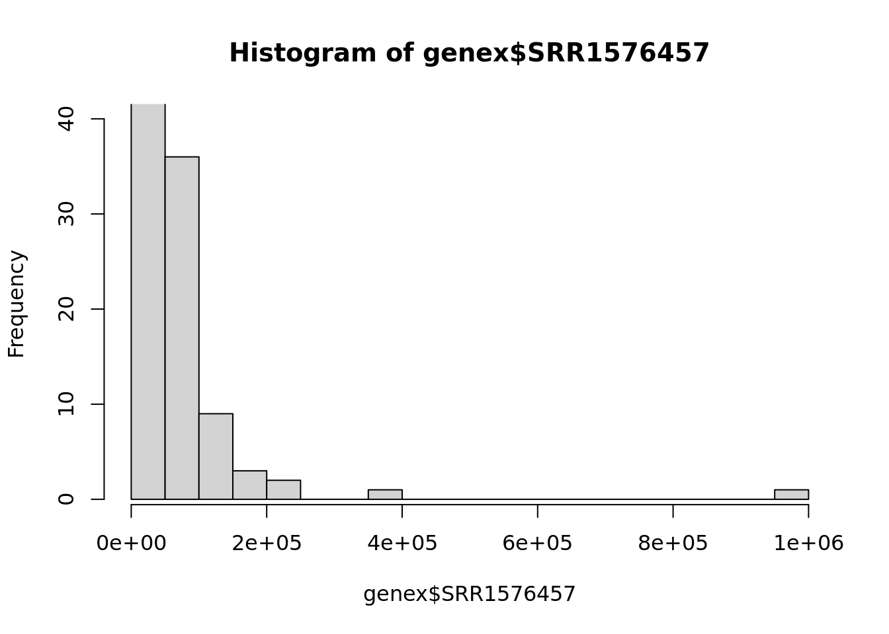
hist(genex$SRR1576458, ylim = c(1, 40))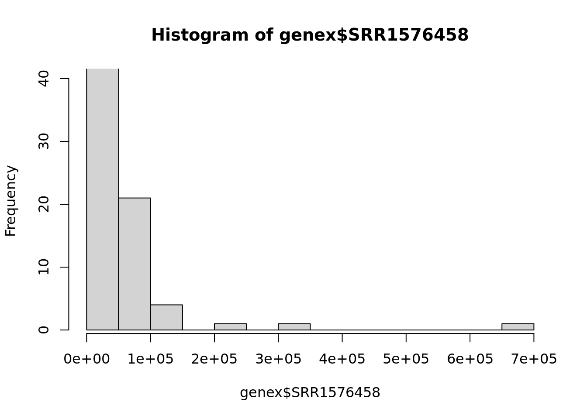
hist(genex$SRR1576459, ylim = c(1, 40))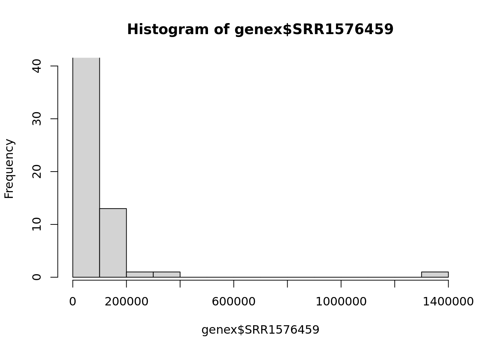
hist(genex$SRR1576460, ylim = c(1, 40))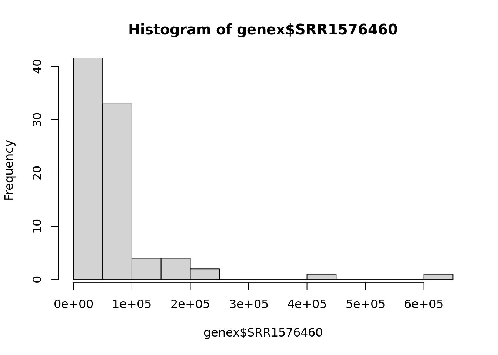
hist(genex$SRR1576461, ylim = c(1, 40))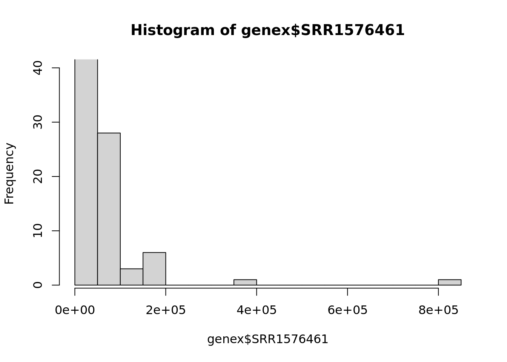
hist(genex$SRR1576462, ylim = c(1, 40))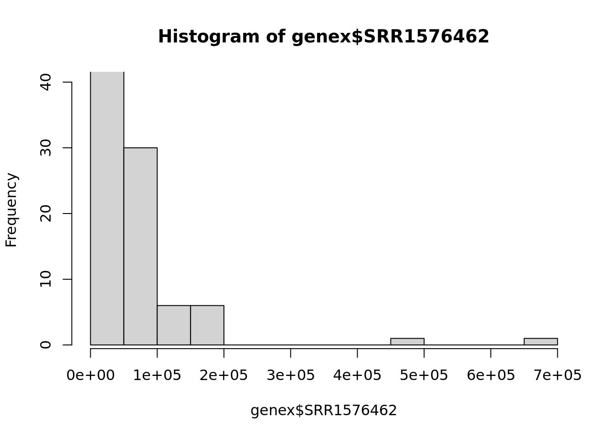
hist(genex$SRR1576463, ylim = c(1, 40))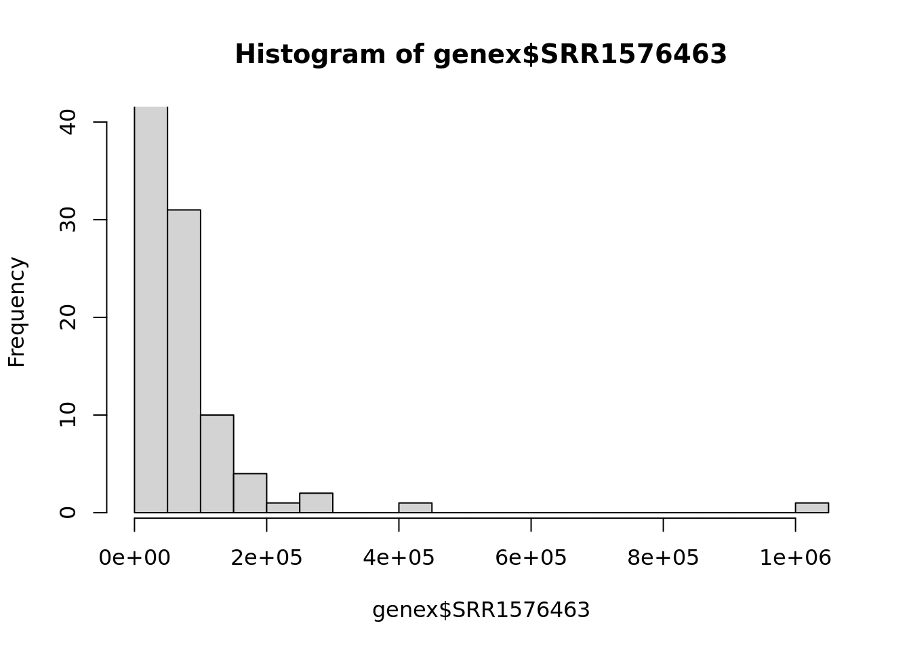
hist(genex$SRR1576464, ylim = c(1, 40))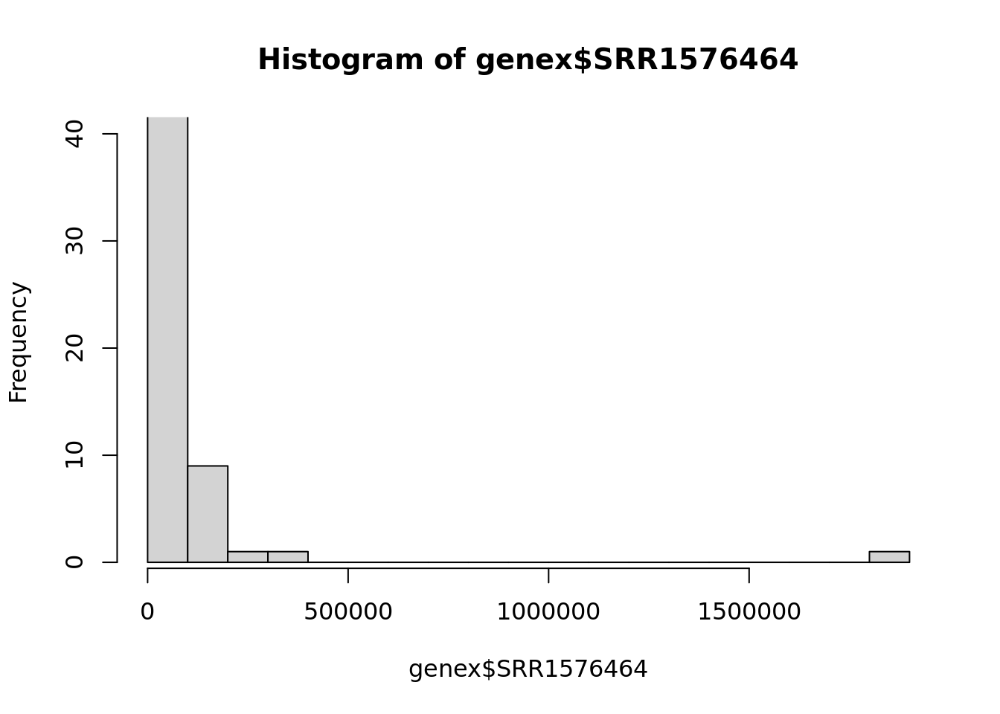
hist(genex$SRR1576465, ylim = c(1, 40))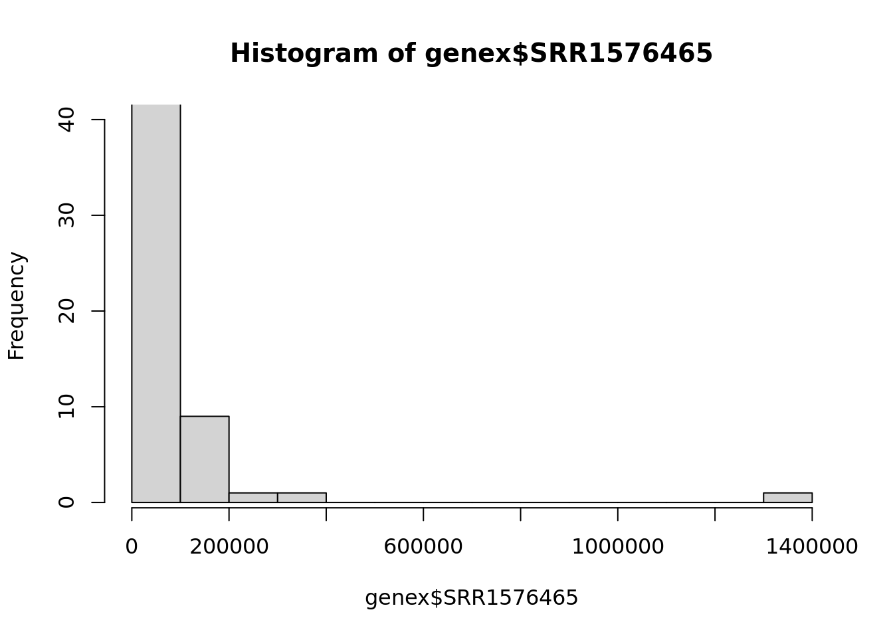
hist(genex$SRR1576514, ylim = c(1, 40))hist(genex$SRR1576515, ylim = c(1, 40))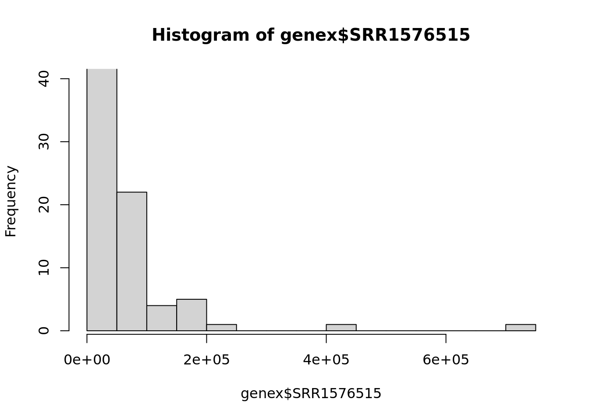
hist(genex$SRR1576516, ylim = c(1, 40))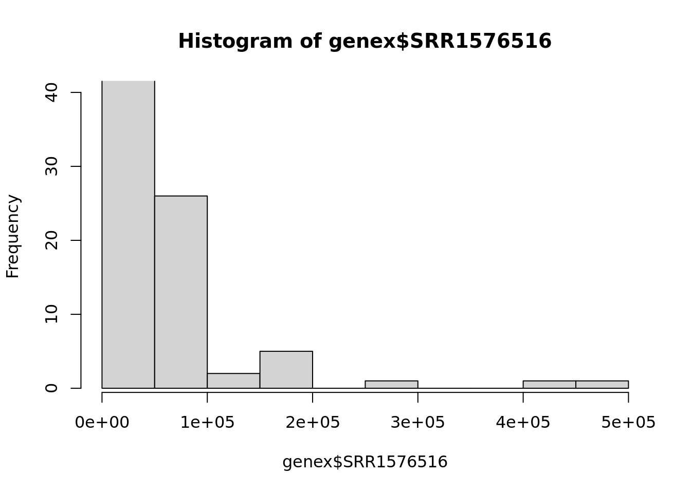
La mayoría de lecturas se agrupan en torno a los tamaños más pequeños, del orden de 10 a 10^5, en todas las muestras.
¿Cuántos genes no se expresan en absoluto en ninguna de las muestras?
sum(rowSums(genex[, -c(1,2)]) == 0) # Cuenta cuántos genes tienen una suma total de cero en todas las columnas. Como las dos primeras columnas no son numéricas, le decimos que cuente todas (,) menos esas (-c...).[1] 4722Hay 4722 genes que no se expresan en ninguna de las muestras. Esto es bastante común en RNA-seq y es simplemente ruido.
Crear el objeto de clase DESeqDataSet
Para crear un objeto de clase DESeqDataSet necesitamos que las filas de la tabla muestras estén en el mismo orden que las columnas en genex. La función DESeqDataSetFromMatrix() necesita que los recuentos sean una matriz, no un marco de datos. Y en muestras debe haber factores.
#Comprobación, hay otra función de r, stopifnot. Esto sirve para abortar inmediatamente un análisis en el que no se cumple la condición necesaria. En este caso, que de las columnas 3 a la 14 han de tener los nombres idénticos a los que aparecen en la columna "sample" de muestra, y que además estén en el mismo orden. Es importante porque luego no se comprueba y si en este momento está mal, el resto del análisis saldrá mal.
suppressMessages(library('DESeq2'))
all(names(genex)[3:14] == muestras$sample)[1] TRUE# Pasamos la columna "sample" a nombres de fila:
row.names(muestras) <- muestras$sample
# Eliminamos la columna "sample", asignándole el valor nulo:
muestras$sample <- NULL
muestras$Pop_temp <- NULL
# Y convertimos "population" y "temp" en factores, variables categóricas que solamente admiten un número concreto de valores posibles (niveles). Los factores pueden tener los niveles ordenados, y al hacer una estadística se pueden calcular los coeficientes diferentes al primero, que es el de referencia, muy útil para comparar controles con casos (el primer nivel del factor serían los controles, a los que se comparan el resto de tratamientos). Como en nuestro caso concreto son dos localizaciones geográficas y temperaturas, importa menos cuál usemos como referencia (primer nivel):
muestras$population <- factor(muestras$population,
levels = c('maine', 'panama'))
muestras$temp <- factor(muestras$temp,
levels = c('low', 'high'))
muestras population temp
SRR1576457 maine low
SRR1576458 maine low
SRR1576459 maine low
SRR1576460 maine high
SRR1576461 maine high
SRR1576462 maine high
SRR1576463 panama low
SRR1576464 panama low
SRR1576465 panama low
SRR1576514 panama high
SRR1576515 panama high
SRR1576516 panama highAunque no hacía falta definir los niveles de los factores, lo indico porque es un buen momento para definir manualmente su orden (por defecto se ordenan alfabéticamente). El orden de los niveles determina qué nivel actúa como referencia en los contrastes estadísticos (el primero). Esto resultaría importante, por ejemplo, al comparar tratamientos respecto de un control.
Los datos de recuento deben ser números enteros y en forma de matriz.
#Eliminamos del marco de datos genex las columnas que no contienen números enteros, que son con los que trabaja el programa. Eliminamos las columnas de nombre e identificador del gen y redondeamos las otras, para generar una matriz de números enteros.
row.names(genex) <- genex$gene_name
genex$gene_name <- NULL
genex$gene_id <- NULL
genex <- round(as.matrix(genex))#Por último creamos este objeto, que puede almacenar la información de otros archivos, en este caso la matriz del cuenteo, los datos de las columnas (muestras) y el diseño estadístico, con una fórmula en R que es la virgulilla, que indica que incluye todas las variables explicativas que pueden afectar a la variable respuesta, que en nuestro caso son la población y temperatura.
dds1 <- DESeqDataSetFromMatrix(
countData = genex,
colData = muestras,
design = ~ population + temp
)converting counts to integer modedds1class: DESeqDataSet
dim: 24254 12
metadata(1): version
assays(1): counts
rownames(24254): 7SLRNA:CR32864 a ... RR51477 Bari1{}RR51478
rowData names(0):
colnames(12): SRR1576457 SRR1576458 ... SRR1576515 SRR1576516
colData names(2): population tempLos objetos DESeqDataSet pueden contener información sobre las coordenadas cromosómicas de los genes o tránscritos, si se construyen a partir de otro tipo de datos.
Pre-filtrado
Una fracción importante de genes no se están expresando en ningúna muestra. Aunque el filtrado no es necesario, ayuda a reducir la memoria ocupada por dds1:
keep <- rowSums(counts(dds1)) > 0 #Vector booleano de valores verdaderos y falsos, tan largo como dds1. Le decimos que sume las filas y diga en qué filas la suma es mayor que 0, diciendo falso en los lugares que todas las columnas suman 0, por lo que no se expresaría ese gen.
dds1 <- dds1[keep, ] #Reducimos el tamaño acorde a lo que definimos anteriormente, eliminando las columnas que dan falso.Expresión diferencial
Observa que la función DESeq() produce un objeto también de clase DESeqDataSet, pero con resultados añadidos:
dds1 <- DESeq(dds1)estimating size factorsestimating dispersionsgene-wise dispersion estimatesmean-dispersion relationshipfinal dispersion estimatesfitting model and testingres <- results(dds1)
reslog2 fold change (MLE): temp high vs low
Wald test p-value: temp high vs low
DataFrame with 19508 rows and 6 columns
baseMean log2FoldChange lfcSE stat pvalue
<numeric> <numeric> <numeric> <numeric> <numeric>
7SLRNA:CR32864 346.333 0.5918974 1.3301901 0.444972 0.656339979
a 555.596 -0.2730041 0.0718487 -3.799710 0.000144866
abd-A 531.996 -0.0286785 0.0789218 -0.363379 0.716321732
Abd-B 634.760 -0.1083918 0.0771241 -1.405421 0.159896272
Abl 1654.842 -0.1328055 0.0746580 -1.778851 0.075264257
... ... ... ... ... ...
RR51007 4.90906 3.8596869 2.972471 1.2984773 1.94123e-01
RR51048 16.60710 -0.8973071 0.341603 -2.6267541 8.62036e-03
RR51093 36.93279 0.0660523 1.685323 0.0391927 9.68737e-01
RR51475 159.62678 -2.6058194 1.875172 -1.3896429 1.64637e-01
RR51477 70.83394 1.6927986 0.192437 8.7966393 1.40975e-18
padj
<numeric>
7SLRNA:CR32864 0.81170166
a 0.00154573
abd-A 0.85146289
Abd-B 0.33849217
Abl 0.20046220
... ...
RR51007 3.82417e-01
RR51048 4.01745e-02
RR51093 9.84464e-01
RR51475 3.44815e-01
RR51477 2.06427e-16Esto es para cada gen, cada fila es uno. Tenemos el nivel basal, y a continuación el cambio de nivel de expresión de una condición con respecto a la otra (en este caso, temperatura alta y baja, si es positivo es que se expresa más a mayor temperatura, si es negativo, lo contrario). Luego tenemos el error estándar, el estadístico empleado, el p valor y el p valor ajustado, estamos haciendo muchas pruebas para cada gen.
Por defecto, la función results() produce la tabla de resultados para el contraste entre el nivel último y el de referencia del último factor en la tabla que describe las muestras. En este caso, el factor es temp, el nivel de referencia es low y el otro nivel es high. Por tanto, los valores de log2FoldChange representan el logaritmo en base 2 de la relación entre niveles de expresión en muestras high respecto de muestras low.
Ejercicio 3 Mira la ayuda de results() y genera también la tabla de resultados para el contraste entre las dos regiones de procedencia de las moscas. Es importante generar contraste para poder interpretar bien los resultados.
res2 <- results(dds1, contrast=c("population", "maine", "panama"))
res2log2 fold change (MLE): population maine vs panama
Wald test p-value: population maine vs panama
DataFrame with 19508 rows and 6 columns
baseMean log2FoldChange lfcSE stat pvalue
<numeric> <numeric> <numeric> <numeric> <numeric>
7SLRNA:CR32864 346.333 0.2116106 1.3301901 0.159083 0.8736035
a 555.596 0.1114459 0.0718333 1.551452 0.1207935
abd-A 531.996 -0.0460822 0.0789226 -0.583891 0.5592939
Abd-B 634.760 0.0424386 0.0771227 0.550274 0.5821315
Abl 1654.842 0.1477705 0.0746581 1.979298 0.0477825
... ... ... ... ... ...
RR51007 4.90906 -2.118240 2.970241 -0.713154 0.475750370
RR51048 16.60710 1.274560 0.344507 3.699659 0.000215889
RR51093 36.93279 0.886468 1.685327 0.525992 0.598893951
RR51475 159.62678 -0.121496 1.875169 -0.064792 0.948339648
RR51477 70.83394 0.187567 0.188818 0.993376 0.320526881
padj
<numeric>
7SLRNA:CR32864 0.966480
a 0.449954
abd-A 0.838008
Abd-B 0.850233
Abl 0.288737
... ...
RR51007 0.79163008
RR51048 0.00812377
RR51093 0.85672953
RR51475 0.98600817
RR51477 0.67811881En este caso, si el fold es positivo, es mayor en maine, que es el numerador (hace el log2 de la expresión en condición X partida la expresión en la referencia).
Usa summary() sobre los resultados para ver el número de genes diferencialmente expresados entre cada par de condiciones.
summary(res)
out of 19508 with nonzero total read count
adjusted p-value < 0.1
LFC > 0 (up) : 2418, 12%
LFC < 0 (down) : 2336, 12%
outliers [1] : 90, 0.46%
low counts [2] : 3018, 15%
(mean count < 2)
[1] see 'cooksCutoff' argument of ?results
[2] see 'independentFiltering' argument of ?resultssummary(res2)
out of 19508 with nonzero total read count
adjusted p-value < 0.1
LFC > 0 (up) : 634, 3.2%
LFC < 0 (down) : 623, 3.2%
outliers [1] : 90, 0.46%
low counts [2] : 3018, 15%
(mean count < 2)
[1] see 'cooksCutoff' argument of ?results
[2] see 'independentFiltering' argument of ?resultsEn la condición de temperatura, hay 2418 genes sobreexpreseados a alta temperatura con respecto a la baja y 2336 subexpresados. En la condición por población, hay 634 genes sobreexpresados en la población de Maine con respecto a la de Panamá y 623 subexpresados.
¿Cuál es la tasa de falsos positivos (FDR)?
FDR1 <- sum(res$padj < 0.1, na.rm = TRUE)
(FDR1/19508)/(1-(FDR1/19508))[1] 0.3222177FDR2 <- sum(res2$padj < 0.1, na.rm = TRUE)
(FDR2/19508)/(1-(FDR2/19508))[1] 0.06887294Gráficas
plotMA(res)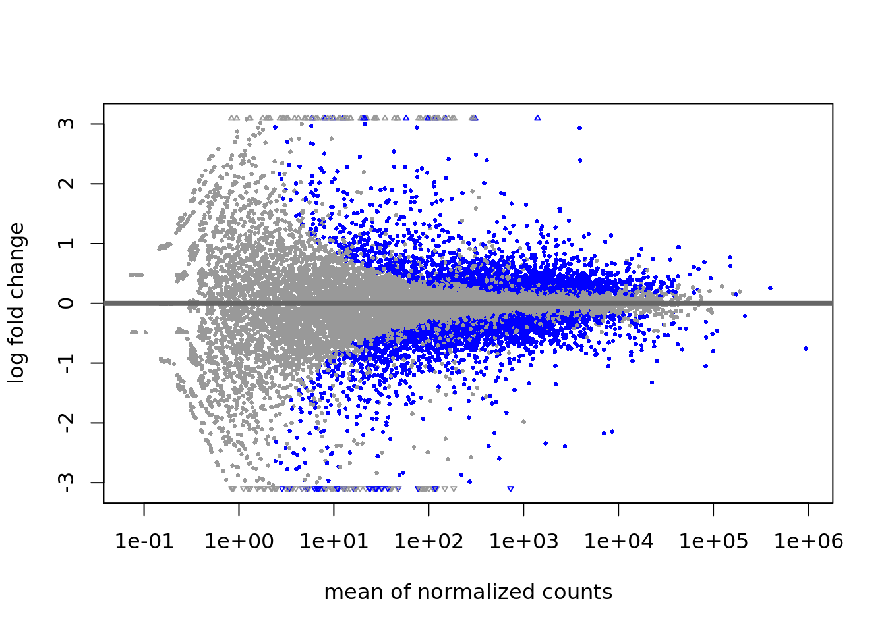
plotMA(res2)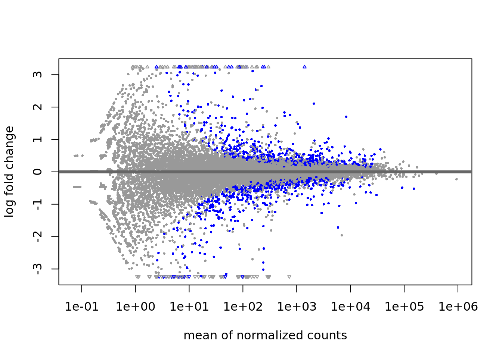
Los genes con niveles de expresión más bajos producen resultados más ruidosos (la varianza es mayor). La función lfcShrink() contrae (shrink) las estimaciones de los efectos (log fold change) para reducir el ruido y hacer el resultado más realista:
resShrink <- lfcShrink(dds1, coef = 'temp_high_vs_low',
type = 'normal')using 'normal' for LFC shrinkage, the Normal prior from Love et al (2014).
Note that type='apeglm' and type='ashr' have shown to have less bias than type='normal'.
See ?lfcShrink for more details on shrinkage type, and the DESeq2 vignette.
Reference: https://doi.org/10.1093/bioinformatics/bty895plotMA(resShrink)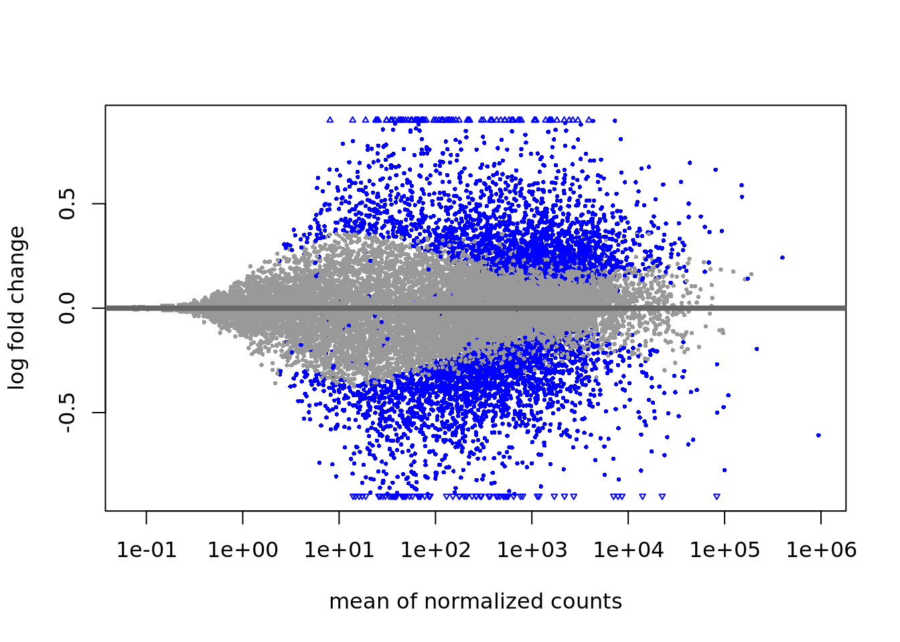